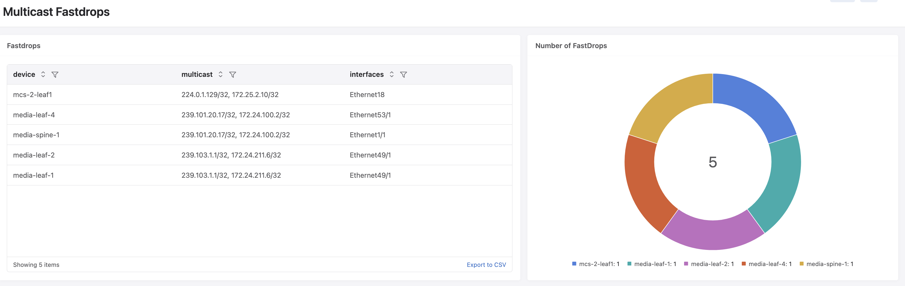

Multicast Fastdrops
This dashboard shows all multicast fastdrop entries happening across all switches in the network. Fastdrops occur when multicast traffic is dropped in hardware due to missing or incomplete routing state.
For more information on multicast fastdrops, refer to the Arista Community article and the EOS Multicast Architecture documentation.
Note
The telemetry path /Sysdb/routing/hardware/multicast is not streamed by default and needs to be added to the TerminAttr include list using the tastreaming.TerminattrStreaming service API with app_name fastdrops.
Examples can be found here
Pre-requisites
The multicast telemetry path must be ingested into CloudVision (see note above)
Devices must be running multicast routing in the default VRF
{kind=link}

Fastdrops
Lists all multicast fastdrop flows across all devices, showing the device, multicast group/source pair and affected interfaces.
let path =`*:/Sysdb/routing/hardware/multicast/status/vrfStatus/{"value":"default"}/route/*/fastdropLastPollTime`
let result = newDict()
for device, fastDropDetails in path{
for key, value in fastDropDetails{
let flow = key["g"]+", "+key["s"]
let multicastKey = flow + " on device " + device
result[multicastKey] = newDict()
let fastDropIntfs = ""
for intf, pollTime in merge(value){
let fastDropIntfs = ""
if fastDropIntfs != ""{
let fastDropIntfs = fastDropIntfs + "\n"+intf
}else{
let fastDropIntfs = intf
}
}
result[multicastKey] = newDict() | setFields("interfaces", fastDropIntfs, "multicast", flow, "device", device)
}
}
result
Number of Fastdrops
Shows the number of fastdrop flows per device as a donut chart, providing a quick overview of which devices are experiencing the most fastdrops.
let path =`*:/Sysdb/routing/hardware/multicast/status/vrfStatus/{"value":"default"}/route/*/fastdropLastPollTime`
let numDevices = newDict()
for device, fastDropDetails in path{
let numFlows = 0
for key, value in fastDropDetails{
let numFlows = numFlows +1
}
numDevices[device] = numFlows
}
numDevices